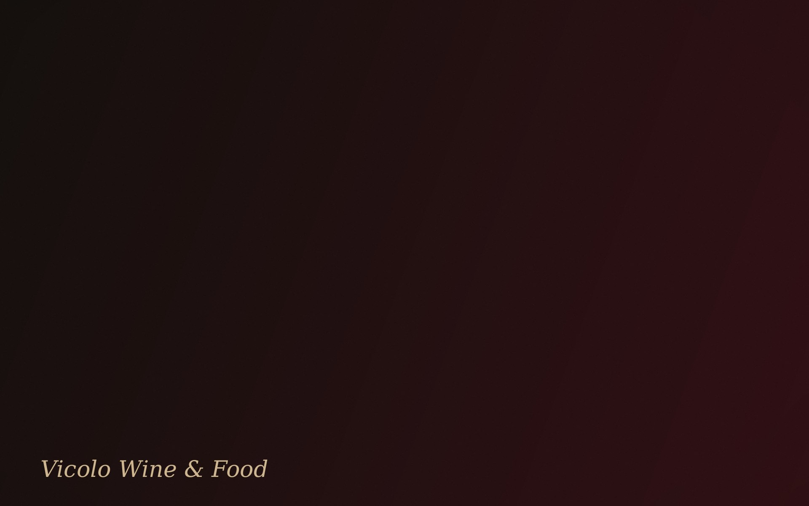

Rimini — Ristorante & Enoteca
Dove il vino
incontra l'emozione.
Un vicolo che si fa tavola. Un calice che si fa racconto. Cucina di territorio e cantina selezionata, servite a lume di candela.
La nostra storia
Un vicolo, mille storie.
Vicolo Wine & Food nasce da un'idea semplice: restituire al vino il ruolo di protagonista, non di accompagnamento. Tra mattoni a vista e luce di candela, ogni tavolo racconta una serata diversa — un brindisi tra amici, una proposta sussurrata, una cena che si allunga senza fretta.
La cucina segue le stagioni e il territorio; la cantina segue il gusto e la curiosità. Il resto lo scrive chi si siede al tavolo.
La cantina
Un viaggio, calice dopo calice.
Oltre 120 etichette selezionate tra piccoli produttori italiani e grandi nomi d'Europa. Ogni bottiglia scelta per essere raccontata, non solo servita.
«Un buon vino non si beve. Si ascolta.»
L'esperienza
Non una cena. Una parentesi.
Il tempo rallenta quando la luce delle candele incontra il colore di un calice. Qui non si ordina soltanto un piatto: si sceglie un ritmo, una conversazione, una serata che merita di essere vissuta senza fretta.
Prenotazione